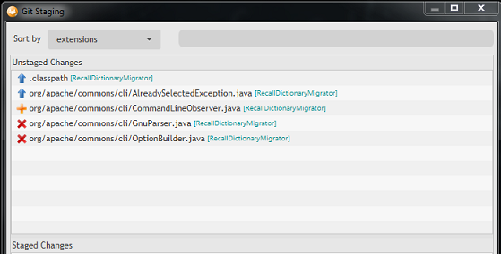
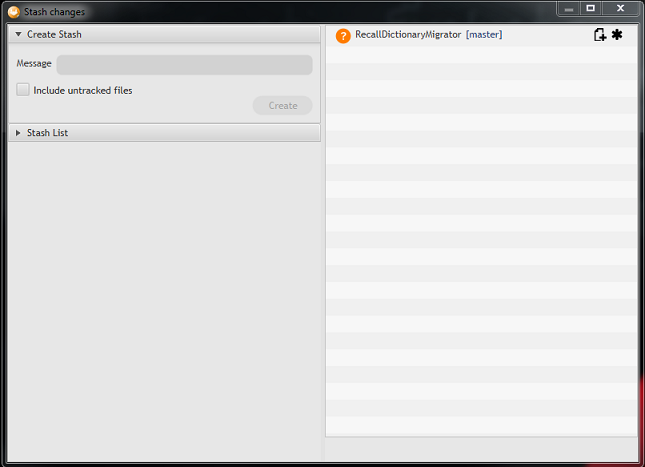
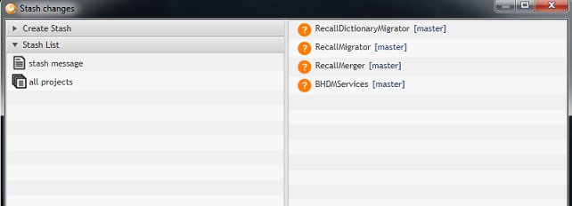
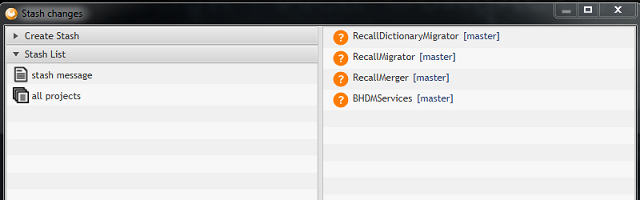

User's guide
Version 0.0.3
Get started #back to top
If you're working with Git in development, then you've probably seen a lot of command line and scripting. While using the command line is a simple and effective way of working, there are some much better tools out there to make working with Git easy.
Gitlab Tool has some great features that make working with Git and GitLab easy, streamlining the way that you work with your project or multiple projects.
Using GitLab tool simplifies how you interact with your Git repositories so you can focus on coding.
This guide will show you how to use this tool for different tasks
Requirements
Gitlab Tool works on different operation systems:
- Windows 7, 8, 8.1, 10
- GTK Linux (RHEL 6 or higher)
Also, the following software needs to be installed on your computer:
- JRE 1.8.0u45 or higher
- Git client
Start application
There are two ways to launch the application:
- Double click on jar file GitlabTool-full.jar
- Open the terminal (or console for Windows OS) and enter following commands:
$ cd path-to-gitlab-tool-location
$ java -jar GitlabTool-full.jar
Login in to GitLab #back to top
Enter your credentials, choose any available Gitlab© server and press Sign in button. If entered credentials are correct, the Main window will be shown. If credentials don't match, corresponding message will be shown in message area.
After the first successful login in the username and last chosen server will be saved in the user home dir
C:\Users\user-name\.GitlabTool for Windows, and /home/*username*/.GitlabTool for *nix. Your password is never saved for security reasons.
The application logs will be saved in .GitLabTools folder as well.
Choose the server
There are three Gitlab servers available by default:
- git.openearth.community
- gitlab.lgc.com
- gitlab.com
You can add another Gitlab server by selecting option 'Other' from 'Service' drop-down.
Enter a server url, choose GitLab API version and press the OK button. If server link is incorrect, the message about it will be shown. If everything is OK, new item will be added in 'Service' drop-down.
Main window #back to top
After successful login in, the Main application window will be shown. At the top of the window there is a the main menu and the toolbar. On the left side of the window - Groups explorer (empty by default).

Clone a group of projects - #back to top
Press Clone group button on the toolbar (or Git → Clone on the main menu) → the Clone window will be shown with the list of groups you have access in selected Gitlab server.

Select a group and destination folder and press OK button. If destination folder input field has invalid value, it will be highlighted with red color. If entered value is valid you will see clone progress in a separate dialog.

Clone operation can be canceled at any time. However, it can take some time to cancel a process and projects that already cloned will be available inside a group.
Import a group- #back to top
If group already cloned in the file system using other software, it stil can be imported into Gitlab Tool. Press Import group button on the toolbar and select the folder with existing group on the file system.
Remove a group - #back to top
Each group can be removed from the GitLab tool. Select the group that needs to be removed and press Remove group button on the toolbar.

You can delete a group from Gitlab Tool or both: from Gitlab Tool and the file system. Note that it will not delete a group from the server, it will affect only you local computer.
Load a group - #back to top
Select group and press Load group button or just double click on group name to load and display list of available projects. The projects window should come up.
Projects window #back to top
The Projects window contains a set of features that allows to perform different operations for multiple projects at once.

At the top of the window there is the main menu, the toolbar and the information bar. Information bar contains the name of current group, path and logged-in user information.
Projects list - #back to top
On the left side of the window there is a projects list with its own toolbar, that has different buttons:
 - Select/Deselect all projects
- Select/Deselect all projects - Refresh projects
- Refresh projects - Show/Hide shadow projects
- Show/Hide shadow projects
Shadow projects are projects that is not cloned yet and they marked with sign. They can be cloned later.
Each project in project list has of three parts: the project type icon, current branch in square brackets on the right part and project name in between.
Project history - #back to top
The Gitlab Tool allows you to see commits history for selected set of prejects. Press the Show History button to display history revisions. The list dynamically updats everytime selected projects have changed. Order of the revisions may change by clicking on 'Date' column.
Console - #back to top
There is a console available at the bottom of the window. It display all necessary information about all actions in Gitlab Tool.
First line of the console shows a current version and a build number.
Below the console you can see the status bar. In shows if any operation is processed at the moment.

Clone projects - #back to top
Shadow project could be cloned using Gitlab Tool as well. Select shadow project (or set of shadow projects) and press Clone button on the toolbar (or Git → Clone on the main menu or MB3 → Clone on the project item). After that the clone progress dialog will be shown (Image 5). If clone process successful, cloned projects type will be changed and it will be displayed as normal project with a set of Git options available for it.
Branches window - #back to top
This feature allows you to perform following operations with branches:
- Create a new branch
- Checkout existing branch
- Remove existing branch
Also, you can select a type of branches that should be displayed: Local, Remote or both of them. The “Only common” checkbox adds a filter for a list of branches that shows branches that contain in all selected projects.
Note: List of projects on the left side of the windows will be changed according to branch availability.

Staging window - #back to top
The Staging window replicates 'git staging' functionality and used to work with changed files in projects.
Using the Staging window you can:
1. Delete new files

2. Replace with HEAD revision changed files

3. Add files to index and commit them

You can sort unstaged files:
1.Alphabetically
2.By project

3.By extension
4.By file status (new, changed, deleted, etc.)
For a quick file search of unstaged files you can use a filter.

Push to server - #back to top
Select the project (or a set of projects) and press Push button on the toolbar. After that, all commits for selected projects will be pushed to upstream.
Pull from server - #back to top
Select the project (or a set of projects) and press Pull button on the toolbar (or Git → Pull on the main menu). After that, all selected projects.
Revert changes - #back to top
You can revert committed changes using "Revert" button.
Stash changes - #back to top
Stash button is always available on the Project toolbar. If user presses it without selecting any projects in the list then the Stash window will be opened for all available projects in projects list:
If user selected some projects in the project list then the Stash window will be opened for selected projects.
The Stash window is unavailable for projects which weren't cloned or have conflicts.
Create stash
A stash will be created for all projects which are shown in the list in the right the window.
If “Include untracked files” checkbox is selected then new files in projects will
be stashed, otherwise only changed files will be stashed. A stash message cannot be empty.
After stashing of all the changes, the projects will be reset on HEAD revision and created stash will be available in the stash list.
Stash list
- Single stash. A stash that was created for one project (using the GitLab Tool or any another tool).
- Group stash.
A stash that was created for few projects (only using the GitLab Tool).
All projects for which stash was created are displayed in the list in the
right side of the window.
An example of creating of group stash is described in Create Stash part 
Apply stash
The stash will be applied to the displayed projects in the list in the right side of the window. After applying the stash it is not removed from the stash list. A user can use drop button to delete it.
Drop stash
After confirming the operation, the stash is removed from the list permanently.
Edit project properties - #back to top
This feature allows you to make changes in pom.xml files. This window contains 3 tabs: “Add repository”, “Edit repository” and “Remove repository”. Also, you can check values of “Release name” and “Eclipse release” properties for selected projects.
During editing you can find two additional checkboxes:
- Commit immediately - makes commit with your changes (if this option is unchecked – changes will apply locally without commit).
- Only common repositories - adds a filter for a list of repositories that shows repositories that contain in all selected projects only